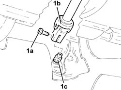
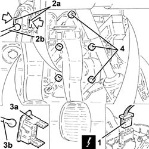
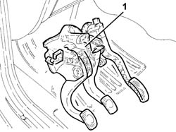
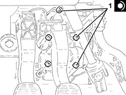
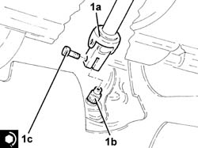

3330B02 pedal assembly - r r
- Path
- Procedures > 33 BRAKING SYSTEM > 3330 HYDRAULIC BRAKING SYSTEM > 3330B pedal unit > 3330B02 pedal assembly - r r
- Kind
- repair procedure (removal / refitting; the operation number is the code)
- Applies to
- all engines; all production periods
- Interactive page
- https://sloeber94.github.io/elrnDB-a147/en/#/3025219
Applies to: all engines; all production periods
 Removing
Removing
 Refitting
RefittingEnsure that the ignition key is in the OFF position, then disconnect the negative battery terminal (-).
 | Name | Connector |
|---|---|---|
- | Battery |
1. Undo the bolt (1a) and disconnect the steering column (1b) from the power assisted steering box pinion (1c).

Applies to: all engines; all production periods
Proceed with removal 5550D10 brake light switch - r+r .
Release the electrical wiring from its attachments.
Applies to: engines: 1.6 TS, 2.0 TS, 3.2 V6; all production periods
Proceed with removal 1056B78 SWITCH on CLUTCH PEDAL - R.R. .
Applies to: engines: 1.9 JTD 8V, 1.9 JTD 16V; all production periods
Proceed with removal 1060G42 .
Applies to: engines: 1.9 JTD 8V, 1.9 JTD 16V; all production periods
| Name | Connector |
|---|---|---|
1 | Accelerator pedal potentiometer |
2. Disengage the clips (2a) and release the brake pump (2b) from the pedal.
3. Remove the clip (3a) and release the rod for the clutch master cylinder (3b) from the pedal.
4. Undo the nuts securing the pedal assembly.

Applies to: engines: 1.9 JTD 8V, 1.9 JTD 16V; all production periods
1. Remove the complete pedal unit.

Applies to: all engines; all production periods
Refitting
Removing1. Refit the complete pedal assembly in its seating and tighten the nuts to the specified torque.
 | Fastening | Component | Ø | Value (daNm) |
|---|---|---|---|---|
1 | Nut | COMPLETE PEDAL ASSEMBLY | M8 | (Bodyshell side) 1.8 ÷ 2.6 |

Applies to: all engines; all production periods
Connect the rod for the clutch master cylinder to the pedal and secure it using the clip.
Refit the brake pump in its seating, connecting it to the brake pedal.
Connect the electrical connection to the accelerator pedal potentiometer.
Applies to: engines: 1.9 JTD 8V, 1.9 JTD 16V; all production periods
Proceed with refitting 1060G42 .
Applies to: engines: 1.6 TS, 2.0 TS, 3.2 V6; all production periods
Proceed with refitting 1056B78 SWITCH on CLUTCH PEDAL - R.R. .
Applies to: engines: 1.6 TS, 2.0 TS, 3.2 V6; all production periods
Refit the electrical wiring in its seating and attach it.
Proceed with refitting 5550D10 brake light switch - r+r .
1. Connect the steering column (1a) to the power steering box pinion (1b) and fix it with a new bolt (1c) to the recommended torque.
| Fastening | Component | Ø | Value (daNm) |
|---|---|---|---|---|
1c | Bolt | STEERING SHAFTS | M8 | (Power assisted steering box pinion side) 2.3 ÷ 2.8 |

Applies to: engines: 1.6 TS, 2.0 TS, 3.2 V6; all production periods
Connect the negative (-) battery terminal.